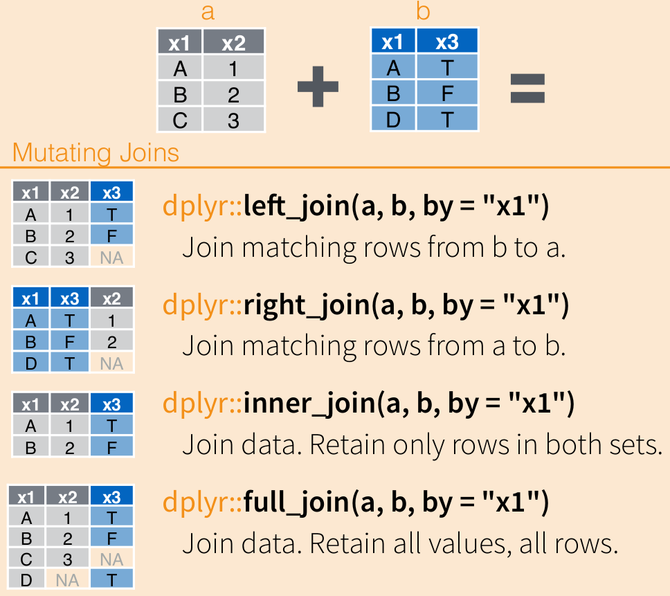

# A tibble: 3 × 2
Gender weight_mean
<chr> <dbl>
1 Female 70.8
2 Male 111.
3 <NA> NaN
Несколько тибблов можно объединить вертикально с помощью функции bind_rows(). Для корректного объединения тибблы должны иметь одинаковые названия колонок.
bind_rows(dc, marvel)
# A tibble: 6 × 2
Gender weight_mean
<chr> <dbl>
1 Female 76.8
2 Male 113.
3 <NA> NaN
4 Female 80.1
5 Male 134.
6 <NA> 129.
Чтобы соединить тибблы горизонтально, воспользуйтесь функцией bind_cols().
# A tibble: 3 × 4
Gender...1 weight_mean...2 Gender...3 weight_mean...4
<chr> <dbl> <chr> <dbl>
1 Female 76.8 Female 80.1
2 Male 113. Male 134.
3 <NA> NaN <NA> 129.
Функции bind_rows() и bind_cols() могут работать не только с двумя, но сразу с несколькими датафреймами.
bind_rows(dc, marvel, other_publishers)
# A tibble: 9 × 2
Gender weight_mean
<chr> <dbl>
1 Female 76.8
2 Male 113.
3 <NA> NaN
4 Female 80.1
5 Male 134.
6 <NA> 129.
7 Female 70.8
8 Male 111.
9 <NA> NaN
На входе в функции bind_rows() и bind_cold() можно подавать как сами датафреймы или тибблы через запятую, так и список из датафреймов/тибблов.
heroes_list_of_df <-list(DC = dc, Marvel = marvel, Other = other_publishers)bind_rows(heroes_list_of_df)
# A tibble: 9 × 2
Gender weight_mean
<chr> <dbl>
1 Female 76.8
2 Male 113.
3 <NA> NaN
4 Female 80.1
5 Male 134.
6 <NA> 129.
7 Female 70.8
8 Male 111.
9 <NA> NaN
Чтобы не потерять, из какого датафрейма какие данные, можно указать любое строковое значение (название будущей колонки) для необязательного аргумента .id =.
bind_rows(heroes_list_of_df, .id ="Publisher")
# A tibble: 9 × 3
Publisher Gender weight_mean
<chr> <chr> <dbl>
1 DC Female 76.8
2 DC Male 113.
3 DC <NA> NaN
4 Marvel Female 80.1
5 Marvel Male 134.
6 Marvel <NA> 129.
7 Other Female 70.8
8 Other Male 111.
9 Other <NA> NaN
bind_rows() обычно используется, когда ваши данные находятся в разных файлах с одинаковой структурой. Тогда вы можете прочитать все таблицы в папке, сохранить их в качестве списка из датафреймов и объединить в один датафрейм с помощью bind_rows().
4.1.2 Реляционные данные: *_join()
В реальности иногда возникает ситуация, когда нужно соединить две таблички, у которых есть общий столбец (или несколько столбцов), но все остальные столбцы различаются. Табличек может быть и больше, это может быть целая сеть таблиц, некоторые из которых содержат основные данные, а некоторые - дополнительные, которые необходимо на определенном этапе “включить” в анализ. Например, таблица с расшифровкой аббревиатур или сокращений вроде коротких названий стран или таблица телефонных кодов разных стран. Совокупность нескольких связанных друг с другом таблиц называют реляционными данными.
В случае с реляционными данными простых bind_rows() и bind_cols() становится недостаточно.
Эти две таблички нужно объединить (join). Эта задача обычно возникает не очень часто, обычно это происходит один-два раза в одном проекте, когда нужно дополнить имеющиеся данные дополнительной информацией извне или объединить два набора данных, обрабатывавшихся в разных программах. Всякий раз, когда такая задача возникает, это доставляет много боли. dplyr предлагает интуитивно понятный инструмент для объединения реляционных данных - семейство функций *_join().
Возьмем для примера два тиббла band_members и band_instruments, встроенных в dplyr специально для демонстрации работы функций *_join().
band_members
# A tibble: 3 × 2
name band
<chr> <chr>
1 Mick Stones
2 John Beatles
3 Paul Beatles
band_instruments
# A tibble: 3 × 2
name plays
<chr> <chr>
1 John guitar
2 Paul bass
3 Keith guitar
У этих двух тибблов есть колонка с одинаковым названием, которая по своему смыслу соединяет данные обоих тибблов. Такая колонка называется ключом. Ключ должен однозначно идентифицировать наблюдения1.
Давайте попробуем посоединять band_members и band_instruments разными вариантами *_join() и посмотрим, что у нас получится. Все эти функции имеют на входе два обязательных аргумента (x = и y =) в которые мы должны подставить два датафрейма/тиббла которые мы хотим объединить. Главное различие между этими функциями заключается в том, что они будут делать, если уникальные значения в ключах x и y не соответствуют друг другу.

left_join():
band_members %>%left_join(band_instruments)
Joining, by = "name"
# A tibble: 3 × 3
name band plays
<chr> <chr> <chr>
1 Mick Stones <NA>
2 John Beatles guitar
3 Paul Beatles bass
left_join() - это самая простая для понимания и самая используемая функция из семейства *_join(). Она как бы “дополняет” информацию из первого тиббла вторым тибблом. В этом случае сохраняются все уникальные наблюдения в x, но отбрасываются лишние наблюдения в тиббле y. Тем значениям, которым не нашлось соотвествия в y, в колонках, взятых их y, ставятся значения NA.
Вы можете сами задать колонки-ключи параметром by =, по умолчанию это все колонки с одинаковыми названиями в двух тибблах.
band_members %>%left_join(band_instruments, by ="name")
# A tibble: 3 × 3
name band plays
<chr> <chr> <chr>
1 Mick Stones <NA>
2 John Beatles guitar
3 Paul Beatles bass
Часто случается, что колонки-ключи называются по-разному в двух тибблах. Их необязательно переименовывать, можно поставить соответстие вручную используя проименованный вектор:
band_members %>%left_join(band_instruments2, by =c("name"="artist"))
# A tibble: 3 × 3
name band plays
<chr> <chr> <chr>
1 Mick Stones <NA>
2 John Beatles guitar
3 Paul Beatles bass
right_join():
band_members %>%right_join(band_instruments)
Joining, by = "name"
# A tibble: 3 × 3
name band plays
<chr> <chr> <chr>
1 John Beatles guitar
2 Paul Beatles bass
3 Keith <NA> guitar
right_join() отбрасывает строчки в x, которых не было в y, но сохраняет соответствующие строчки y - left_join() наоборот.
full_join():
band_members %>%full_join(band_instruments)
Joining, by = "name"
# A tibble: 4 × 3
name band plays
<chr> <chr> <chr>
1 Mick Stones <NA>
2 John Beatles guitar
3 Paul Beatles bass
4 Keith <NA> guitar
Функция full_join() сохраняет все строчки и из x и y. Пожалуй, наиболее используемая функция после left_join() — благодаря full_join() вы точно ничего не потеряете при объединении.
inner_join():
band_members %>%inner_join(band_instruments)
Joining, by = "name"
# A tibble: 2 × 3
name band plays
<chr> <chr> <chr>
1 John Beatles guitar
2 Paul Beatles bass
Функция full_join() сохраняет только строчки, которые присутствуют и в x, и в y.
semi_join():
band_members %>%semi_join(band_instruments)
Joining, by = "name"
# A tibble: 2 × 2
name band
<chr> <chr>
1 John Beatles
2 Paul Beatles
anti_join():
band_members %>%anti_join(band_instruments)
Joining, by = "name"
# A tibble: 1 × 2
name band
<chr> <chr>
1 Mick Stones
Функции semi_join() и anti_join() не присоединяют второй датафрейм/тиббл (y) к первому. Вместо этого они используются как некоторый словарь-фильтр для отделения только тех значений в x, которые есть в y (semi_join()) или, наоборот, которых нет в y (anti_join()).
Принцип tidy data предполагает, что каждая строчка содержит в себе одно измерение, а каждая колонка - одну характеристику. Тем не менее, это не говорит однозначно о том, как именно хранить повторные измерения. Их можно хранить как одну колонку для каждого измерения (широкий формат) и как две колонки: одна колонка - для идентификатора измерения, другая колонка - для записи самого измерения.
Это лучше понять на примере. Например, вес до и после прохождения курса. Как это лучше записать - как два числовых столбца (один испытуемый - одна строка) или же создать отдельную “группирующую” колонку, в которой будет написано время измерения, а в другой - измеренные значения (одно измерение - одна строка)?
Широкий формат:
Студент
До курса по R
После курса по R
Маша
70
63
Рома
80
74
Антонина
86
71
Длинный” формат:
Студент
Время измерения
Масса (кг)
Маша
До курса по R
70
Рома
До курса по R
80
Антонина
До курса по R
86
Маша
После курса по R
63
Рома
После курса по R
74
Антонина
После курса по R
71
На самом деле, оба варианта приемлимы, оба варианта возможны в реальных данных, а разные функции и статистические пакеты могут требовать от вас как длинный, так и широкий форматы.
Таким образом, нам нужно научиться переводить из широкого формата в длинный и наоборот.
tidyr::pivot_longer(): из широкого в длинный формат
tidyr::pivot_wider(): из длинного в широкий формат
Если таких колонок будет много, то это уже станет сильно неудобным, нам придется много копировать код, а это чревато ошибками и очень скучно.
Поэтому в dplyr есть функция для операций над несколькими колонками сразу: dplyr::across()2. Эта функция работает похожим образом на функции семейства apply() и использует tidyselect для выбора колонок.
Таким образом, конструкции с функцией across() можно разбить на три части:
Выбор колонок с помощью tidyselect. Здесь работают все те приемы, которые мы изучили при выборе колонок (@ref(tidyselect)).
Собственно применение функции across(). Первый аргумент .col — колонки, выбранные на первом этапе с помощью tidyselect, по умолчанию это everything(), т.е. все колонки. Второй аргумент .fns — это функция или целый список из функций, которые будут применены к выбранным колонкам. Если функции требуют дополнительных аргументов, то они могут быть перечислены внутри across().
Использование summarise() или другой функции dplyr. В этом случае в качестве аргумента для функции используется результат работы функции across().
Вот такой вот бутерброд выходит. Давайте посмотрим, как это работает на практике и посчитаем среднее значение по колонкам Height и Weight.
# A tibble: 3 × 3
Gender Height Weight
<chr> <dbl> <dbl>
1 Female NA NA
2 Male NA NA
3 <NA> NA NA
Здесь мы столкнулись с уже известной нам проблемой: функция mean() при столкновении хотя бы с одним NA будет возвращать NA, если мы не изменим параметр na.rm =. Как и в случае с функциями семейства apply() (@ref(apply_f)), дополнительные параметры для функции можно перечислить через запятую после самой функции:
До этого мы просто использовали выбор колонок по их названию. Но именно внутри across() использование tidyselect раскрывается как удивительно элегантный и мощный инструмент. Например, можно посчитать среднее для всех numeric колонок:
Внутри одного across() можно применить не одну функцию к каждой из выбранных колонок, а сразу несколько функций для каждой из колонок. Для этого нам нужно использовать список функций (желательно - проименованный).
Хотя основное применение функции across() — это массовое подытоживание с помощью summarise(), across() можно использовать и с другими функциями dplyr. Например, можно делать массовые операции с колонками с помощью mutate():
# A tibble: 734 × 11
X1 name Gender `Eye color` Race `Hair color` Height Publisher
<dbl> <fct> <fct> <fct> <fct> <fct> <dbl> <fct>
1 0 A-Bomb Male yellow Human No Hair 203 Marvel C…
2 1 Abe Sapien Male blue Icthyo … No Hair 191 Dark Hor…
3 2 Abin Sur Male blue Ungaran No Hair 185 DC Comics
4 3 Abomination Male green Human /… No Hair 203 Marvel C…
5 4 Abraxas Male blue Cosmic … Black NA Marvel C…
6 5 Absorbing Man Male blue Human No Hair 193 Marvel C…
7 6 Adam Monroe Male blue <NA> Blond NA NBC - He…
8 7 Adam Strange Male blue Human Blond 185 DC Comics
9 8 Agent 13 Female blue <NA> Blond 173 Marvel C…
10 9 Agent Bob Male brown Human Brown 178 Marvel C…
# … with 724 more rows, and 3 more variables: `Skin color` <fct>,
# Alignment <fct>, Weight <dbl>
Конструкция across() работает не только внутри summarise() и mutate(), можно применять across() и с другими функциями, которые используют data-masking. Например, можно использовать across() внутри count() вместе с функцией n_distinct(), которая считает количество уникальных значений в векторе. Это позволяет посмотреть таблицу частот для группирующих переменных:
# A tibble: 11 × 3
Gender Alignment n
<chr> <chr> <int>
1 Female bad 35
2 Female good 161
3 Female neutral 4
4 Male bad 165
5 Male good 316
6 Male neutral 18
7 Male <NA> 6
8 <NA> bad 7
9 <NA> good 19
10 <NA> neutral 2
11 <NA> <NA> 1
4.4 Функциональное программирование: purrr
purrr — это пакет для функционального программирования в tidyverse. Как и многие пакеты tidyverse, purrr пытается заменить собой базовый функционал R на более понятный и удобный. В данном случае, речь в первую очередь идет о функциях семейства apply(), с которыми мы работали ранее (@ref(apply_f)).
Давайте вспомним, как работает lapply(). В качестве первого аргумента функция lapply() принимает список (или то, что может быть в него превращено, например, датафрейм), в качестве второго - функцию, которая будет применена к каждому элементу списка. На выходе мы получим список такой же длины.
Как и lapply(), map() всегда возвращает список. Из-за этого мы больше пользовались функцией sapply(), а не lapply(). Функция sapply() упрощала результат до вектора, если это возможно. Подобное упрощение может показаться удобным пока не сталкиваешься с тем, что иногда очень сложно предсказать, какой тип данных получится на выходе. Есть функция vapply() в которой можно управлять типом данных на выходе, но она не очень удобная. В purrr эта проблема решена просто: есть множество функций map_*(), где вместо звездочки - нужный формат на выходе.
Например, если мы хотим получить строковый вектор на выходе, то нам нужна функция map_chr().
heroes %>%map_chr(class)
X1 name Gender Eye color Race Hair color
"numeric" "character" "character" "character" "character" "character"
Height Publisher Skin color Alignment Weight
"numeric" "character" "character" "character" "numeric"
Можно превратить результат в датафрейм с помощью map_df().
heroes %>%map_df(class)
# A tibble: 1 × 11
X1 name Gender `Eye color` Race `Hair color` Height Publisher
<chr> <chr> <chr> <chr> <chr> <chr> <chr> <chr>
1 numeric character character character charact… character numer… character
# … with 3 more variables: `Skin color` <chr>, Alignment <chr>, Weight <chr>
Так же как и функции семейства apply(), функции map_*() отлично сочетаются с анонимными функциями.
heroes %>%map_int(function(x) sum(is.na(x)))
X1 name Gender Eye color Race Hair color Height
0 0 29 172 304 172 217
Publisher Skin color Alignment Weight
0 662 7 239
Однако у purrr есть свой, более короткий способ записи анонимных функций: function(arg) заменяется на ~, а arg на ..
heroes %>%map_int(~sum(is.na(.)))
X1 name Gender Eye color Race Hair color Height
0 0 29 172 304 172 217
Publisher Skin color Alignment Weight
0 662 7 239
Если нужно итерироваться сразу по нескольким спискам, то есть функции map2_*() (для двух списков) и pmap_*() (для нескольких списков).
4.5 Колонки-списки и нестинг: nest()
Ранее мы говорили о том, что датафрейм — это по своей сути список из векторов разной длины. На самом деле, это не совсем так: колонки обычного датафрейма вполне могут быть списками. Однако делать так обычно не рекомендуется, пусть R это и не запрещает создавать такие колонки: многие функции предполагают, что все колонки датафрейма являются векторами.
tidyverse гораздо дружелюбнее относится к использовании списка в качестве колонки. Такие колонки называются колонками-списками (list columns). Основной способ их создания - использования функции tidyr::nest(). С помощью tidyselect нужно выбрать сжимаемые колонки, которые будут агрегированы по невыбранным колонками. Это и называется нестингом.
heroes %>%nest(!Gender)
Warning: All elements of `...` must be named.
Did you want `data = !Gender`?
# A tibble: 3 × 2
Gender data
<chr> <list>
1 Male <tibble [505 × 10]>
2 Female <tibble [200 × 10]>
3 <NA> <tibble [29 × 10]>
Заметьте, у нас появилась колонка data, в которой содержатся тибблы. Туда и спрятались все наши данные.
Нестинг похож на агрегирование с помощью group_by(). Если сделать нестинг сгруппированного с помощью group_by() тиббла, то сожмутся все колонки кроме тех, которые выступают в качестве групп:
Теперь можно работать с колонкой-списком как с обычной колонкой. Например, применять функцию для каждой строчки (то есть для каждого тиббла) с помощью map() и записывать результат в новую колонку с помощью mutate().
Разжатая колонка обычно больше сжатой, поэтому разжатие привело к удлинению тиббла. Вместо удлинения тиббла, его можно расширить с помощью unnest_wider().
Нестинг - это мощный инструмент tidyverse, хотя во многих случаях можно обойтись и без него. Наиболее эффективна эта конструкция именно в тех ситуациях, где вы делаете операции над целыми тибблами. Поэтому наибольшее распространение нестинг получил в смычке с пакетом broom для расчета множественных статистических моделей.
Если ключи будут неуникальными, то функции *_join() не будут выдавать ошибку. Вместо этого они добавят в итоговую таблицу все возможные пересечения повторяющихся ключей. С этим нужно быть очень осторожным, поэтому рекомендуется, во-первых, проверять уникальность ключей на входе и, во-вторых, проверять тиббл на выходе. Ну или использовать эту особенность работы функции *_join() себе во благо.↩︎
Функция across() появилась в пакете dplyr относительно недавно, до этого для работы с множественными колонками в tidyverse использовались многочисленные функции *_at(), *_if(), *_all(), например, summarise_at(), summarise_if(), summarize_all(). Эти функции до сих пор присутствуют в dplyr, но считаются устаревшими. Другая альтернатива - использование пакета purrr (@ref(purrr)) или семейства функций apply() (@ref(apply_f)).↩︎